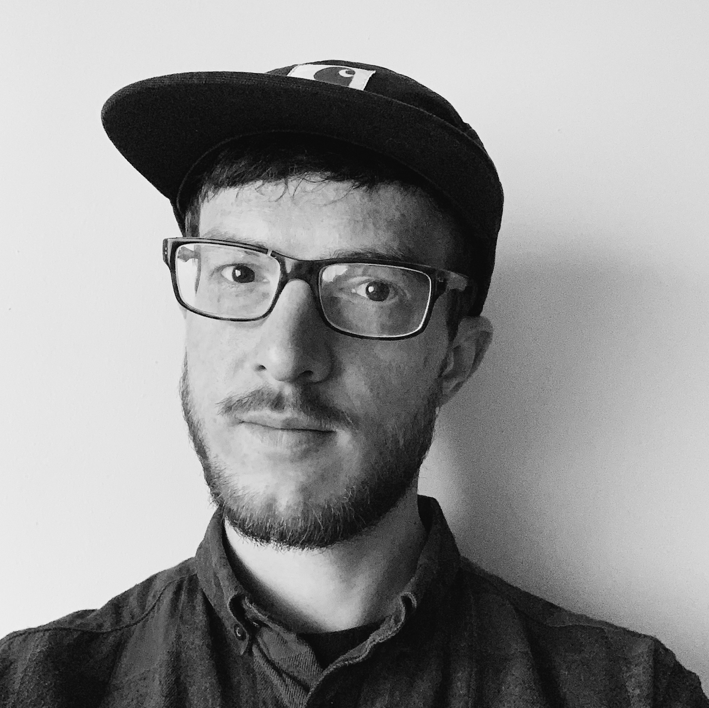

<!doctype html>
<html class="no-js" lang="en">

<head>
    <meta charset="utf-8">
    <meta http-equiv="x-ua-compatible" content="ie=edge">
    <title>norbert-toth</title>
    <meta name="description" content="">
    <meta name="viewport" content="width=device-width, initial-scale=1, shrink-to-fit=no">

    <link rel="manifest" href="site.webmanifest">
    <link rel="apple-touch-icon" sizes="180x180" href="/apple-touch-icon.png">
    <link rel="icon" type="image/png" sizes="32x32" href="/favicon-32x32.png">
    <link rel="icon" type="image/png" sizes="16x16" href="/favicon-16x16.png">
    <link rel="manifest" href="/site.webmanifest">
    <link rel="mask-icon" href="/safari-pinned-tab.svg" color="#5bbad5">
    <meta name="msapplication-TileColor" content="#2d89ef">
    <meta name="theme-color" content="#ffffff">

    <link rel="stylesheet" href="styles/styles.css">
</head>

<body>
    <header id="about-me" role="heading" class="header-grid">
        <figure class="header__portrait-image ">
            
        </figure>
        <section role="region" aria-labelledby="name">
            <hgroup>
                <h1 id="name" class="header__name typography--headline2">
                    Norbert Tóth</h1>
                <h2 class="typography--headline6">UI developer</h2>
            </hgroup>
            <p class="header__tagline">
                Crafter of fast, consistent, responsive, and resilient UIs. Rider of nice track bikes. Listener of loud punk music. Brewer
                of possibly too much fancy coffee. Lover of all cats.</p>
            <p class="typography--body1">Phone:
                <a href="tel:36-30-88-33-273">(+36) 30 88-33-273</a>
            </p>
            <p class="typography--body1">Email:
                <a href="mailto:hello@norbert-toth.me">hello@norbert-toth.me</a>
            </p>
            <p class="typography--body1">Web:
                <a href="https://norbert-toth.me" target="blank">https://norbert-toth.me</a>
            </p>
            <p class="typography--body1">GitHub:
                <a href="https://github.com/nygdjs" target="blank">https://github.com/nygdjs</a>
            </p>
            <p class="typography--body1">
                LinkedIn:
                <a href="https://www.linkedin.com/in/n0rbert-t0th/" target="blank">https://www.linkedin.com/in/n0rbert-t0th/</a>
            </p>
        </section>
    </header>

    <div class="main-grid">
        <main role="main" class="main">
            <article role="article" aria-labelledby="employment" class="main__section">
                <h2 id="employment" class="typography--headline4">Experience</h2>

                <section role="region" aria-labelledby="quince" class="card">
                    <hgroup role="heading" class="card__header">
                        <h4 class="typography--overline">
                            <time>August 2013 - May 2018</time>
                        </h4>
                        <h3 id="quince" class="typography--headline5">
                            <a href="http://quince.nl" target="blank">Quince Hungary / Quince Amsterdam</a>
                        </h3>
                        <h5 class="typography--subtitle2">Budapest, Hungary</h5>
                    </hgroup>

                    <div aria-labelledby="frontend-developer" class="card__section">
                        <hgroup role="heading">
                            <h5 class="typography--overline">
                                <time>Late 2014 - MAY 2018</time>
                            </h5>
                            <h4 id="frontend-developer" class="typography--headline6">Frontend developer</h4>
                        </hgroup>
                        <p class="typography--body1">I was lucky enough, that Quince gave me the time and space to experiment and grow in what interested
                            me, so I gradually became a full-time frontend developer, and work with brands like HTC, Philips,
                            Whirlpool and Bissell.</p>
                        <p class="typography--body1">At first I created static HTML and CSS builds from Photoshop files, provided by our in-house design
                            department. Then fast forward to 2017, and found myself in the lead engineer role of the development
                            of our fist real product-minded content creation tools and framework.</p>
                        <p class="typography--body1">In between I built a ton of e-learning content (in the form of special microsites) on a daily basis
                            with our own framework (Vanilla JS, with nunjucks or Pug as templating language, and styled with
                            Sass.). Participated in the maintenance, and feature development of our e-learning platforms
                            and CMS systems.
                        </p>
                        <p class="typography--body1">From 2016 took part in the development of the framework itself (I introduced the templating languages,
                            and some custom, Pug based UI-component alike solution, along with a Gulp and Bower.).
                        </p>
                        <p class="typography--body1">In 2017, as we decided to move towards a product-minded solution, participated in the planning and
                            design of the new product. After a couple of changes in the organisation, I even took over the
                            leading tech role of the development, when I had the opportunity to plan architecture, decide
                            which technologies to use (I chose React and styled-components with the usual mix of Babel, Webpack
                            and npm.).
                        </p>
                    </div>
                    <div aria-labelledby="content-editor" class="card__section">
                        <hgroup role="heading">
                            <h5 class="typography--overline">
                                <time>August 2013 - Late 2014</time>
                            </h5>
                            <h4 id="content-editor" class="typography--headline6">Content editor</h4>
                        </hgroup>
                        <p class="typography--body1">As a content editor, my role was to localize (Quince deals with more than 20 languages on a daily
                            basis.) and customize our e-learning contents, either be Photoshop designs, or static microsites.</p>
                        <p class="typography--body1">To be effective in this role, one should master a mix of a basic skills of a designer, a developer
                            and a software tester, so I dipped a toe in all of these fields a little. </p>
                        <p class="typography--body1">Which eventually lead me to realize what may be my lifelong journey.</p>
                    </div>
                </section>

                <section role="region" aria-labelledby="oazis" class="card">
                    <hgroup role="heading">
                        <h4 class="typography--overline">
                            <time>February 2008 - August 2013</time>
                        </h4>
                        <h3 id="oazis" class="typography--headline5">
                            <a href="http://oaziscomputer.hu" target="blank">Oázis Computer</a>
                        </h3>
                        <h5 class="typography--subtitle2">Budapest, Hungary</h5>
                    </hgroup>
                    <div aria-labelledby="shop-manager" class="card__section">
                        <h4 id="shop-manager" class="typography--headline6">Shop manager, Creative manager, Display specialist</h4>
                        <p class="typography--body1">I worked there from the first day, we opened the shop. As the company is a specialist in creative
                            process related hardwares (graphics displays, pen tablets, workstations), my role beside normal
                            store management was to be up-to-date in these product categories. Through the years I became
                            a specialist in high-end graphics displays, calibration and digital color management, both print
                            and online. I wrote hardware reviews, and regularly published on our website. Besides these
                            my responsibility was the day-to-day management of the shop, both online and offline. Later I
                            started to focus on building and maintaining relationships with manufacturers, find new partners
                            industry wide, and new marketing possibilities. We became key partners of DELL, EIZO, WACOM,
                            X-Rite and number one sellers of DELL pro displays in Hungary. I also worked together with our
                            developers and designers, to design, and build our websites, online advertisements and printed
                            material.
                        </p>
                    </div>
                </section>
            </article>
            <article role="article" aria-labelledby="education" class="main__section">
                <h2 id="education" class="typography--headline4">Education</h2>

                <section role="region" aria-labelledby="bmfRKK" class="card">
                    <hgroup role="heading">
                        <h4 class="typography--overline">
                            <time>2010-2012 (Unfinished)</time>
                        </h4>
                        <h3 id="bmfRKK" class="typography--headline5">
                            <a href="https://www.uni-obuda.hu/en" target="blank">Óbuda University</a>
                        </h3>
                        <h5 class="typography--subtitle2">Budapest, Hungary</h5>
                        <h5 class="typography--subtitle1">Sándor Rejtő Faculty of Light Industry and Environmental Protection Engineering</h5>
                    </hgroup>
                    <div>
                        <h4 class="typography--headline6">
                            Light Industry Engineering
                        </h4>
                        <p class="typography--body1">(with the intention to study industrial package design)</p>
                    </div>
                </section>
                <section role="region" aria-labelledby="bmfNIK" class="card">
                        <hgroup role="heading">
                            <h4 class="typography--overline">
                                <time>2007-2009 (Unfinished)</time>
                            </h4>
                            <h3 id="bmfNIK" class="typography--headline5">
                                <a href="https://www.uni-obuda.hu/en" target="blank">Óbuda University</a>
                            </h3>
                            <h5 class="typography--subtitle2">
                                Budapest, Hungary</h5>
                            <h5 class="typography--subtitle1">John von Neumann Faculty of Informatics</h5>
                        </hgroup>
                        <div>
                            <h4 class="typography--headline6">
                                Computer Engineering
                            </h4>
                        </div>
                </section>
                <section role="region" aria-labelledby="mesharray" class="card">
                    <hgroup role="heading">
                        <h4 class="typography--overline">
                            <time>2007-2008</time>
                        </h4>
                        <h3 id="mesharray" class="typography--headline5">
                            <a href="https://mesharray.hu" target="blank">MeshArray Digital Media School</a>
                        </h3>
                        <h5 class="typography--subtitle2">Budapest, Hungary</h5>
                    </hgroup>
                    <div>
                        <h4 class="typography--headline6">
                            Adobe Flash Expert
                        </h4>
                        <p class="typography--body1">Adobe Certified Learning Program</p>
                    </div>
                </section>
                <section role="region" aria-labelledby="KJG" class="card">
                        <hgroup role="heading">
                            <h4 class="typography--overline">
                                <time>1996-2004 (graduated)</time>
                            </h4>
                            <h3 id="KJG" class="typography--hadline5">
                                <a href="http://kjg.hu/" target="blank">Katona József Secondary Grammar School and faculty of ICT</a>
                            </h3>
                            <h5 class="typography--subtitle2">Kecskemét, Hungary</h5>
                        </hgroup>
                </section>
            </article>
        </main>
        <aside id="my-skills" class="sidebar">
            <section role="region" aria-labelledby="professional-skills" class="sidebar--skills__professional"></section>
        </aside>
    </div>
</body>

</html>
